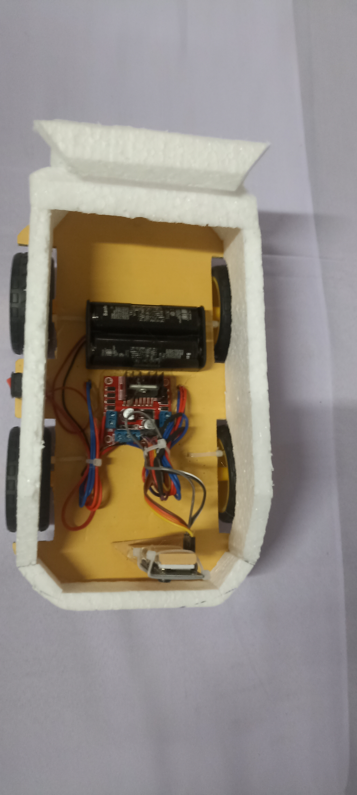
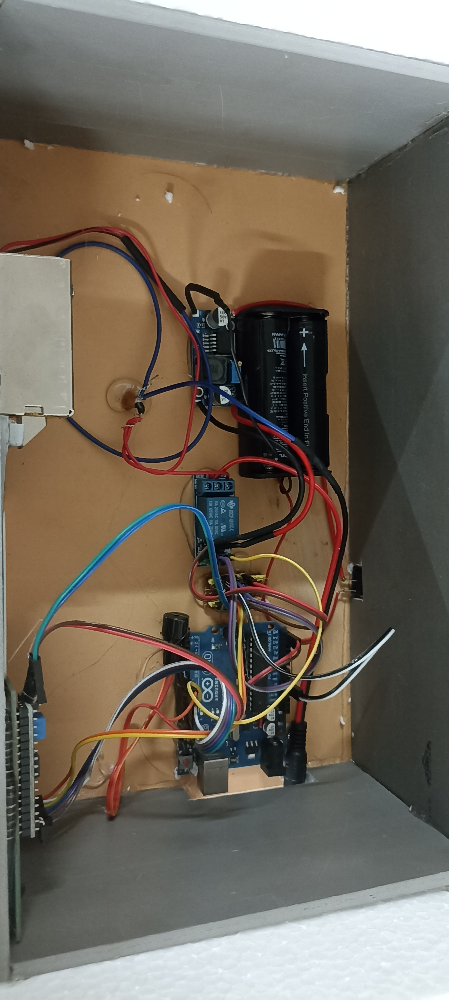

IDEAS MADE VISIBLE
ICT Exhibition 2026
A showcase of student creativity, problem-solving, and technology.

ARDUINO CONCEPT · IN PROGRESSArduino Surveillance CarA student-built Arduino car concept for remote movement and basic area monitoring.Exhibition projectView project details
RFID · SMART ATTENDANCE SMART ACCESS · IN PROGRESSRFID Door Lock with Smart AttendanceAn RFID-based door access concept paired with smart attendance tracking.Exhibition projectView project details